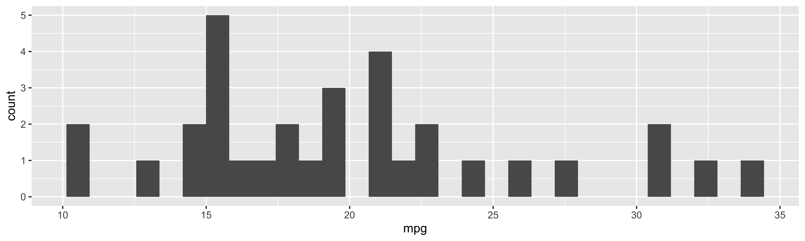

ggplot(data = mtcars) +
geom_point(aes(y = mpg, x = cyl))02-2: Using Quarto to Create Presentations
Get Started
The first thing you need to do to create a presentation using Quarto via revealjs is to add appropriate format information in the YAML header of the qmd file like below:
---
title: "02-1 Using Quarto to Create Presentations"
format:
revealjs:
theme: [default, ../custom.scss]
fontsize: 1.6em
callout-icon: false
scrollable: true
echo: true
fig-dpi: 400
---
Note
formatneeds to be specified asrevealjs- You can add
revealjs-specific options belowrevealjs:(We will look at various options later).
You can start a new slide using either # or ##.
Use # (level 1 header)
# new section titleBy default, this creates a new slide with new section title printed left-aligned at the middle of the slide.
Use ## (level 2 header)
## new slide titleBy default, this creates a new slide with new slide title printed at the top left corner of the slide.
Direction
Look at the sample_qmd_revealjs.qmd
We have already learned how to do this. The way we include R codes are consistent across different output formats (including presentation with revealjs)!!
```{r}
R codes
```
Recommended global settings for research presentations
Place the options below in the YAML header, which hides all the codes, messages, and warnings that the audience does not have to see.
execute:
echo: false
message: false
warning: falseUseful Tools
::: {.incremental}
- collect data
- run statistical analysis
- report
:::- collect data
- run statistical analysis
- report
:::: {.columns}
::: {.column width="40%"}
Plot 1
```{r}
ggplot(data = mtcars) +
geom_point(aes(y = mpg, x = cyl))
```
:::
::: {.column width="60%"}
Plot 2
```{r}
ggplot(data = mtcars) +
geom_histogram(aes(x = mpg))
```
:::
::::Plot 1
Plot 2
ggplot(data = mtcars) +
geom_histogram(aes(x = mpg))
Add scrollable: true under revealjs: to make each of the slides scrollable when the contents are too big to present on a screen.
---
format:
revealjs:
scrollable: true
---scrollable: true is enabled in this presentation.
you
can
see
that
right?
ggplot(data = mtcars) +
geom_histogram(aes(x = mpg)) 
You do not see me!
Try
Hitting the “s” key will generate a pop-up window with speaker view.
You can add a logo with the logo option under revealjs:.
---
format:
revealjs:
logo: logo.png
---This presentation has the code below in the YAMl and you can see the logo at the bottom-right corner.
---
format:
revealjs:
logo: nebraska-n.jpg
---You can create tabs using the following code:
::: {.panel-tabset}
### Tab A
Content for `Tab A`
### Tab B
Content for `Tab B`
:::Figure
You can use
out-width:option to control the size of a figure.fig-align:option to control the alignment of a figure.
See here for all the options available.
```{r}
#| out-width: 100%
ggplot(data = mtcars) +
geom_histogram(aes(x = mpg))
```ggplot(data = mtcars) +
geom_histogram(aes(x = mpg)) 
```{r}
#| out-width: 80%
#| fig-align: center
ggplot(data = mtcars) +
geom_histogram(aes(x = mpg))
```ggplot(data = mtcars) +
geom_histogram(aes(x = mpg)) 
```{r}
#| out-width: 50%
#| fig-align: right
ggplot(data = mtcars) +
geom_histogram(aes(x = mpg))
```ggplot(data = mtcars) +
geom_histogram(aes(x = mpg)) To set the figure size exactly you can specify all of the four options:
fig-widthfig-heightout-widthout-height
Note
- By default
fig-options take numeric numbers and the unit is inch. - For
out-options you need to addinafter a numeric number to make them consistent with thefig-options.
```{r}
#| fig-width: 10
#| fig-height: 3
#| out-width: 10in
#| out-height: 3in
ggplot(data = mtcars) +
geom_histogram(aes(x = mpg))
```ggplot(data = mtcars) +
geom_histogram(aes(x = mpg)) 
Theme
There are many pre-made themes that you can apply to revealjs presentations. See the list here.
You can set a theme using the theme option in the YAML header like below:
format:
revealjs:
theme: dark
Direction
Try one of the themes listed and see how the theme of the presentation changes.